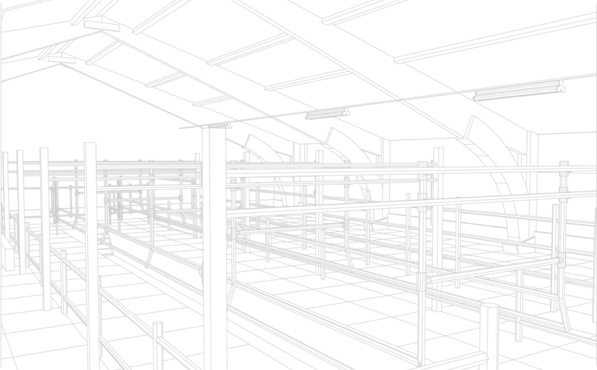

Technology, Interface Design
Using UX Design to Build a Sustainable Future
6 May 2020
Transformation has to be driven by everybody, not just by climate groups, and we have a responsibility to use our influence to drive this. .svg)